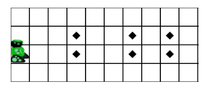
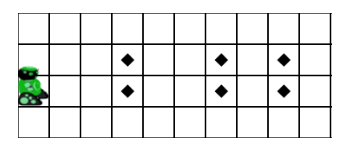
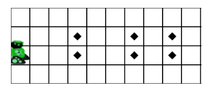
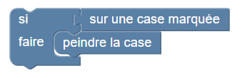
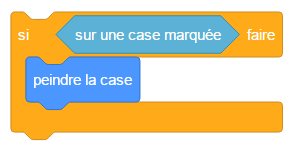
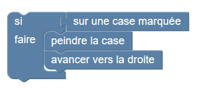
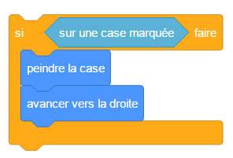
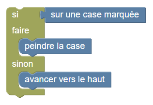
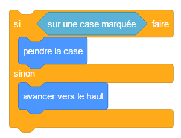

Dessiner les cases marquées


 

Programmer le robot pour qu'il peigne toutes les cases marquées.
Elles sont toujours par deux l'une au dessus de l'autre. Votre robot doit peindre les deux avant de passer à la colonne suivante.
Avec
le bloc « si »,
l'instruction if,
vous pouvez tester le contenu de la case du robot, et ne la peindre que si elle est marquée :


if caseMarquee():
peindre()
Notez que vous pouvez placer plusieurs instructions dans
un bloc « si »,
une instruction if,
comme illustré ci-dessous :


if caseMarquee():
peindre()
droite()
Vous pouvez utiliser
un bloc « si / sinon »,
une instruction if / else,
qui permet d'effectuer des opérations différentes selon si la case du robot contient une marque ou non.


if caseMarquee():
peindre()
else:
haut()
Indication : au total, le robot doit se déplacer 14 fois vers la droite pour atteindre le dernier marqueur.